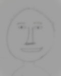

sYmмeтRYЯтэмmYꙅ
(Symmetry)
아버지죽이기
(Patricide)
[Rondo]
Self-Portrait of Father
11 잠자는 아버지를 바라보며 (0:00) 10 아버지의 마지막 몸부림 (1:42) 9 움직이지 않는 아버지 (3:13) 8 그롙 매닉 에피소드 (5:26) 7 도깨비불 육과 팔 (6:58) 6 ∅∅∅∅∅∅ (10:40)
23 Looking at sleeping father (0:00) 20 Last struggle of father (1:42) 17 Unbreathing father (3:13) 14 Great manic epis (5:26) 11 Will o wisp 68 (6:58) 8 ∅∅∅∅∅∅∅∅ (10:40)
Begrafenis Wals
(Funeral Waltz)
[String Quartet in Polytonality: simultaneous major & minor, partly atonal & microtonal]

Storyline
In Andante Scherzando, despite the tragic news of her friend's death, Mrs. V.S. attends a ballroom party and dances with young gentlemen. In La Reminiscenza, Mrs. V.S. delves deep into her subconscious memories, including those that may never have existed, and finds enlightenment. In Veliero & Euforia, she then travels on a sailing ship with dreams, against the wind and the waves, and becomes euphoric before reaching a rosy Romanza (Romance in between reality and fantasy) state, where she dislocates her memories and achieves self-realisation.
4 Movements
3 Impromptus from Wales
Ballet in Imagination
[Impromptu No3]

Ballerinas
The Adventures of Pwlldu Leaf
[Impromptu No2]

Pwlldu Bay
Gwynt Gaeaf Cymreig
(Welsh Winter Wind)
[Impromptu No1 in Bitonality]

Castle Graig
Godsgeschenk
(Gift From Heaven)
[Lied, for Countertenor/Alto]

Storyline
Scene 1 depicts Annet meeting her mother in a dream, which is followed by Scene 2, where a girl (Annet) encounters a withered flower (Mother) with the help of the sun, the cloud and the wind. In Scene 3, Annet wakes up and says ‘Life goes the way it goes’.
Lyrics
The Capricious Woman
[Caprice in various keys & partly atonal]

Mood Swings
Krasjemeisje - The Kitten
[Sonatina]

4 Movements